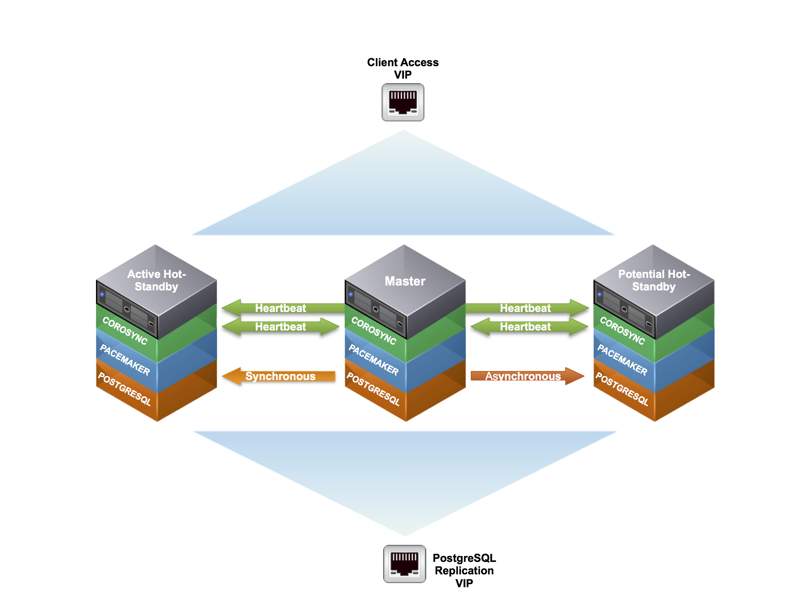

Building a highly available multi node cluster with pacemaker & corosync
Overview¶
Building a highly available multi-node PostgreSQL cluster, using freely available software including Pacemaker, Corsync, Cman and PostgresSQL on CentOS
Infrastructure¶

Vagrant Setup¶
In order to assist in following along with this tutorial, you can use the following Vagrantfile to spool up a cluster environment using CentOS 6.6
For those unfaimilar with please download and install the latest version from vagrantup.
Once installed create a root directory that will house files for this project.
mkdir pgdb_cluster
Navigate into the newly created root directory
cd pgdb_cluster
Download the Vagrantfile noted above into your root directory
wget http://kb.techtaco.org/linux/postgresql/attachments/Vagrantfile
Now to create the three virtual machines needed for this development environment we simply run {varant up}. This will read the Vargrantfile located in the project root directory. This downloads the neede .box (virtual machine) image and creates the needed clones with specified modifications.
vagrant up
Once the virtual machines are provisioned and started you can access them via the { vagrant ssh } command. Replace pgdb1 with the other machines to access them as well, note you must be in the root directory of the project.
vagrant ssh pgdb1
HA Cluster Installation¶
The required are available and included in the base/updates repositories for Centos 6.x.
From my readings and research it is also possible to use heartbeat 3.x with Pacemaker to achieve similar results. I've decided to go with Corosync as its backed by Red Hat and Suse and it looks to have more active development. Not to mention that the Pacemaker projects recommends you should use Corosync.
Cluster Installation¶
Warning! As of RedHat/CentOS 6.4 crmsh is no longer included in the default repositories. If you want to use CRM vs PCS You can include the OpenSuse repositories HERE. More information on the crmsh can be found HERE
In this tutorial we will add the openSUSE repository to our nodes. Though I recommend building or copying these packages into a local repository for more controlled management.
Configure the openSUSE repository. This need to be done on ALL nodes in the cluster.
sudo wget -4 http://download.opensuse.org/repositories/network:/ha-clustering:/Stable/RedHat_RHEL-6/network:ha-clustering:Stable.repo -O /etc/yum.repos.d/network_ha-clustering_Stable.repo
Limit the packages to be installed from the openSUSE repository. We only want the crm shell package and required dependencies. This need to be done on ALL nodes in the cluster.
sudo runuser -l root -c 'echo "includepkgs=crmsh pssh python-pssh" >> /etc/yum.repos.d/network_ha-clustering_Stable.repo'
Now that we have the required repositories configured we need to install the needed packages. This need to be done on ALL nodes in the cluster.
You will see multiple dependencies being pulled in
sudo yum install pacemaker pcs corosync fence-agents crmsh cman ccs
Cluster Configuration¶
The first step is to configure the underlying Cman/Corosync cluster ring communication between the nodes and setup Pacemaker to use Corosync as its communication mechanism.
For secure communication Corosync requires an pre-shared authkey. This shared key must be added to all nodes in the cluster.
To generate the authkey Corosync has a utility corosync-keygen. Invoke this command as the root users to generate the authkey. The key will be generated at /etc/corosync/authkey. You only need to perform this action on one of the nodes in the cluster as we'll copy it to the other nodes
sudo /usr/sbin/corosync-keygen
Hint! Grab a cup of coffee this process takes a while to complete as it pulls from the more secure /dev/random. You don’t have to press anything on the keyboard it will still generate the authkey**
Once the key has been generated copy it to the other nodes in the cluster
sudo scp /etc/corosync/authkey root@pgdb2:/etc/corosync/ sudo scp /etc/corosync/authkey root@pgdb3:/etc/corosync/
In multiple examples and documents on the web they reference using the packmaker corosync plugin by adding a /etc/corosync/service.d/pcmk configure file on each node. This is becoming deprecated and will show in the logs if you enable or use the corosync pacemaker plugin. There is a small but important distinction that I stumbled upon, the pacemaker plugin has never been supported on RHEL systems.
The real issue is that at some point it will no longer be supplied with the packages on RHEL systems. Prior to 6.4 ( Though this is looking to change in 6.5 and above ), pacemaker only had a tech preview status for the plugin and using the CMAN plugin instead.
Reference this wiki article
Disable quorum in order to allow Cman/Corosync to complete startup in a standalone state.
This need to be done on ALL nodes in the cluster.
sudo sed -i.sed "s/.*CMAN_QUORUM_TIMEOUT=.*/CMAN_QUORUM_TIMEOUT=0/g" /etc/sysconfig/cman
Define the cluster, where pg_cluster is the cluster name. This will generate the cluster.conf configuration file.
This only needs to be run on one node, we'll copy it to the other nodes. For simplicity we will run this on pgdb1 in the cluster
sudo ccs -f /etc/cluster/cluster.conf --createcluster pg_cluster
Create the cluster redundant ring(s). The name used for each node in the cluster should correspond to the nodes network hostname uname -n.
This only needs to be run on one node, we'll copy it to the other nodes. For simplicity we will run this on pgdb1 in the cluster
sudo ccs -f /etc/cluster/cluster.conf --addnode pgdb1.example.com sudo ccs -f /etc/cluster/cluster.conf --addnode pgdb2.example.com sudo ccs -f /etc/cluster/cluster.conf --addnode pgdb3.example.com
Configure the fence_pcmk agent (supplied with Pacemaker) to redirect any fencing requests from CMAN components (such as dlm_controld) to Pacemaker. Pacemaker’s fencing subsystem lets other parts of the stack know that a node has been successfully fenced, thus avoiding the need for it to be fenced again when other subsystems notice the node is gone.
This only needs to be run on one node, we'll copy it to the other nodes. For simplicity we will run this on pgdb1 in the cluster
sudo ccs -f /etc/cluster/cluster.conf --addmethod pcmk-redirect pgdb1.example.com sudo ccs -f /etc/cluster/cluster.conf --addmethod pcmk-redirect pgdb2.example.com sudo ccs -f /etc/cluster/cluster.conf --addmethod pcmk-redirect pgdb3.example.com
sudo ccs -f /etc/cluster/cluster.conf --addfencedev pcmk agent=fence_pcmk
sudo ccs -f /etc/cluster/cluster.conf --addfenceinst pcmk pgdb1.example.com pcmk-redirect port=pgdb1.example.com sudo ccs -f /etc/cluster/cluster.conf --addfenceinst pcmk pgdb2.example.com pcmk-redirect port=pgdb2.example.com sudo ccs -f /etc/cluster/cluster.conf --addfenceinst pcmk pgdb3.example.com pcmk-redirect port=pgdb3.example.com
Enable secure communciation between nodes in the Corosync cluster using the corosync authkey generated above.
This only needs to be run on one node, we'll copy it to the other nodes. For simplicity we will run this on pgdb1 in the cluster
sudo ccs -f /etc/cluster/cluster.conf --setcman keyfile="/etc/corosync/authkey" transport="udpu"
Before we start the cman service and copy the configuration to the other nodes in the cluster lets verify that the generated configuration values are valid.
This should be run on the same node as the pervious commands. For simplicity we will run this on pgdb1 in the cluster
sudo ccs_config_validate -f /etc/cluster/cluster.conf
Start the Cman/Corosync cluster services
This only needs to be run on one node, we'll copy it to the other nodes. For simplicity we will run this on pgdb1 in the cluster
sudo /etc/init.d/cman start
Starting cluster: Checking if cluster has been disabled at boot... [ OK ] Checking Network Manager... [ OK ] Global setup... [ OK ] Loading kernel modules... [ OK ] Mounting configfs... [ OK ] Starting cman... [ OK ] Waiting for quorum... [ OK ] Starting fenced... [ OK ] Starting dlm_controld... [ OK ] Tuning DLM kernel config... [ OK ] Starting gfs_controld... [ OK ] Unfencing self... [ OK ] Joining fence domain... [ OK ]
Note that starting Cman also starts the Corosync service. This can be easily verified via the Corosync init script
sudo /etc/init.d/corosync status corosync (pid 18376) is running...
Start the Pacemaker cluster service
This only needs to be run on one node, we'll copy it to the other nodes. For simplicity we will run this on pgdb1 in the cluster
sudo /etc/init.d/pacemaker start Starting Pacemaker Cluster Manager [ OK ]
Before continuing verify that all services have correctly started and are running.
sudo /etc/init.d/cman status cluster is running.
sudo /etc/init.d/corosync status corosync (pid 615) is running...
sudo /etc/init.d/pacemaker status pacemakerd (pid 868) is running...
After the initial node has been successfully configured and services have started copy the cluster.conf to the other nodes in the cluster
sudo scp /etc/cluster/cluster.conf pgdb2.example.com:/etc/cluster/cluster.conf sudo scp /etc/cluster/cluster.conf pgdb3.example.com:/etc/cluster/cluster.conf
Start the Cman/Corosync services on additional nodes in the cluster.
sudo /etc/init.d/cman start
Starting cluster: Checking if cluster has been disabled at boot... [ OK ] Checking Network Manager... [ OK ] Global setup... [ OK ] Loading kernel modules... [ OK ] Mounting configfs... [ OK ] Starting cman... [ OK ] Waiting for quorum... [ OK ] Starting fenced... [ OK ] Starting dlm_controld... [ OK ] Tuning DLM kernel config... [ OK ] Starting gfs_controld... [ OK ] Unfencing self... [ OK ] Joining fence domain... [ OK ]
Before continuing and starting Pacemaker on additional nodes in the cluster verify that ALL nodes in the cluster are communicating via the Cman/Corosync cluster ring.
View cluster ring Cman/Corosync status, this should be run on ALL nodes to verify that are correctly communicating
sudo cman_tool nodes -a
Node Sts Inc Joined Name
1 M 4 2014-04-09 08:30:22 pgdb1.example.com
Addresses: 10.4.10.60
2 M 8 2014-04-09 08:44:01 pgdb2.example.com
Addresses: 10.4.10.61
3 M 12 2014-04-09 08:44:08 pgdb3.example.com
Addresses: 10.4.10.62
Start the Pacemaker service on additional nodes in the cluster
sudo /etc/init.d/pacemaker start Starting Pacemaker Cluster Manager [ OK ]
Before continuing verify that all services have correctly started and are running on the additional nodes in the cluster.
sudo /etc/init.d/cman status cluster is running.
sudo /etc/init.d/corosync status corosync (pid 615) is running...
sudo /etc/init.d/pacemaker status pacemakerd (pid 868) is running...
Verify that ALL nodes have joined the Pacemaker cluster.
View Pacemaker HA cluster status
sudo pcs status
Cluster name: pg_cluster Last updated: Thu Apr 10 07:39:08 2014 Last change: Thu Apr 10 06:49:19 2014 via cibadmin on pgdb1.example.com Stack: cman Current DC: pgdb1.example.com - partition with quorum Version: 1.1.10-14.el6_5.2-368c726 3 Nodes configured 0 Resources configured Online: [ pgdb1.example.com pgdb2.example.com pgdb3.example.com ] Full list of resources:
Pacemaker Cluster Configuration¶
At this point we have configured the basic cluster communication ring. All nodes are now communicating and reporting their heartbeat status to each of the nodes via Corosync.
Verify the Pacemaker cluster configuration. Here you'll notice the cluster is complaining that STONITH (Shoot The Other Node In The Head) is not configured.
sudo pcs cluster verify -V
error: unpack_resources: Resource start-up disabled since no STONITH resources have been defined error: unpack_resources: Either configure some or disable STONITH with the stonith-enabled option error: unpack_resources: NOTE: Clusters with shared data need STONITH to ensure data integrity Errors found during check: config not valid
For now we are going to disable this and come back to it later in the tutorial. This only needs to be run on one node of the cluster as they are syncing configurations between the nodes.
sudo pcs property set stonith-enabled=false
Verify the Pacemaker stonith property was correctly configured.
sudo pcs config
Cluster Name: pg_cluster Corosync Nodes: Pacemaker Nodes: pgdb1.example.com pgdb2.example.com pgdb3.example.com Resources: Stonith Devices: Fencing Levels: Location Constraints: Ordering Constraints: Colocation Constraints: Cluster Properties: cluster-infrastructure: cman dc-version: 1.1.10-14.el6_5.2-368c726 stonith-enabled: false ```` Now verifying the Pacemaker cluster configuration again returns no errors. ```` sudo pcs cluster verify -V ```` Pacemaker IP Resources ---------------------- With a basic cluster configuration setup resources can be created for the cluster to manage. The first resource to add is a cluster IP or "VIP" so that applications will be able to continuously communicate with the cluster regardless of where the cluster services are running. Resources only need to be created on **one** node in the cluster Pacemaker/Corosync will replicate the cluster information base (CIB) to all nodes in the cluster Create a IP resources "VIPs" using the **ocf:heartbeat:IPaddr2** resource agent 'script'. Create Replication "VIP": This will be used for additional PostgreSQL replicas to recieve updates from the Master ````bash sudo pcs resource create pgdbrepvip ocf:heartbeat:IPaddr2 ip=10.10.10.104 cidr_netmask=24 iflabel="pgdbrepvip" op monitor interval=1s meta target-role="Started" ```` Create Client Access "VIP": This will be used for client applications to connect to the acitve Master database ````bash sudo pcs resource create pgdbclivip ocf:heartbeat:IPaddr2 ip=10.10.10.105 cidr_netmask=24 iflabel="pgdbclivip" op monitor interval=1s meta target-role="Started" ```` Verify the Pacemaker cluster resource has been correctly added to the cluster information base (CIB). ````bash sudo pcs config ```` ```` Cluster Name: pg_cluster Corosync Nodes: Pacemaker Nodes: pgdb1.example.com pgdb2.example.com pgdb3.example.com Resources: Resource: pgdbrepvip (class=ocf provider=heartbeat type=IPaddr2) Attributes: ip=10.10.10.104 cidr_netmask=24 iflabel=pgdbrepvip Meta Attrs: target-role=Started Operations: monitor interval=1s (pgdbrepvip-monitor-interval-1s) Resource: pgdbclivip (class=ocf provider=heartbeat type=IPaddr2) Attributes: ip=10.10.10.105 cidr_netmask=24 iflabel=pgdbclivip Meta Attrs: target-role=Started Operations: monitor interval=1s (pgdbclivip-monitor-interval-1s) Stonith Devices: Fencing Levels: Location Constraints: Ordering Constraints: Colocation Constraints: Cluster Properties: cluster-infrastructure: cman dc-version: 1.1.10-14.el6_5.2-368c726 stonith-enabled: false ```` View the running status of the cluster. Here we can see that both the IP resources "VIPs" are running. ```` sudo pcs status ```` ```` Cluster name: pg_cluster Last updated: Thu Apr 10 08:04:14 2014 Last change: Thu Apr 10 07:53:03 2014 via cibadmin on pgdb1.example.com Stack: cman Current DC: pgdb1.example.com - partition with quorum Version: 1.1.10-14.el6_5.2-368c726 3 Nodes configured 2 Resources configured Online: [ pgdb1.example.com pgdb2.example.com pgdb3.example.com ] Full list of resources: pgdbrepvip (ocf::heartbeat:IPaddr2): Started pgdb1.example.com pgdbclivip (ocf::heartbeat:IPaddr2): Started pgdb2.example.com ```` The pgdbclivip IP resource "VIP" was started on pgdb2, for simplicity we will move it to pgdb1. ```` sudo pcs resource move pgdbclivip pgdb1.example.com ```` Viewing the running status of the cluster again we can see both resources are now running on pgdb1 ```` sudo pcs status ```` ```` Cluster name: pg_cluster Last updated: Thu Apr 10 08:11:48 2014 Last change: Thu Apr 10 08:06:56 2014 via crm_resource on pgdb1.example.com Stack: cman Current DC: pgdb1.example.com - partition with quorum Version: 1.1.10-14.el6_5.2-368c726 3 Nodes configured 2 Resources configured Online: [ pgdb1.example.com pgdb2.example.com pgdb3.example.com ] Full list of resources: pgdbrepvip (ocf::heartbeat:IPaddr2): Started pgdb1.example.com pgdbclivip (ocf::heartbeat:IPaddr2): Started pgdb1.example.com ```` PostgreSQL Database Configuration --------------------------------- Before adding a Pacemaker pgsql resource to manage the PostgreSQL services, its recommended to setup the PostgreSQL cluster (The PostgreSQL internal cluster) with some basic streaming replication. The version of PostgreSQL that is in the provided repositories on CentOS 6.5 is 8.4.20 which does not provide the needed streaming replication. To work around this we will add PGDG (PostgreSQL Global Development Group) repository. As of this writing we are using PostgreSQL version 9.3.5 Configure the needed repository. This need to be done on **ALL** nodes in the cluster. ```bash sudo wget http://yum.postgresql.org/9.3/redhat/rhel-6-x86_64/pgdg-centos93-9.3-1.noarch.rpm -O /tmp/pgdg-centos93-9.3-1.noarch.rpm
sudo rpm -Uvh /tmp/pgdg-centos93-9.3-1.noarch.rpm
With the correct repository configured install the recommended packages.
sudo yum install postgresql93-server postgresql93-contrib postgresql93-devel
Initialize the PostgreSQL database via initdb. We only need to perform this on the Master node as we'll be transferring the database to the remaining nodes. I'll be referring to these nodes as PostgreSQL replicas (pgdb2, pgdb3).
We will use pgdb1 as the Master from here on out.
sudo /etc/init.d/postgresql-9.3 initdb
Once the initialization is successful you'll see the PostgreSQL data directory populated. On CentOS this is located in /var/lib/pgsql/{version (9.3)}/data
sudo ls /var/lib/pgsql/9.3/data/
When the database was initialized via initdb it configured permissions in the pg_hba.conf. This uses the ident scheme to determine if a user is allowed to connect to the database.
ident: An authentication schema that relies on the currently logged in user. If you’ve su -s to postgres and then try to login as another user, ident will fail (as it’s not the currently logged in user).
This can be a sore spot if you're not aware how it was configured and will produce an error if trying to create a database with a user that is not currently logged into the system.
createdb: could not connect to database postgres: FATAL: Ident authentication failed for user "myUser"
To avoid this headache modify the pg_hba.conf file to move from the ident scheme to the md5 scheme.
This needs to be modified on the Master pgdb1
sudo sed -i 's/\ ident/\ md5/g' /var/lib/pgsql/9.3/data/pg_hba.conf
# IPv4 local connections: host all all 127.0.0.1/32 md5 # IPv6 local connections: host all all ::1/128 md5
Modify the pg_hba.conf to allow the repclias to connect to the Master. In this tutorial we are adding a basic connection line. It is recommended that you tune this based on your infrastructure for proper security.
This needs to be modified on the Master pgdb1
sudo runuser -l postgres -c "cat << EOF >> /var/lib/pgsql/9.3/data/pg_hba.conf # Allowing Replicas to connect in for streaming replication host replication replicator all trust EOF"
Configure the bind address the PostgreSQL will listen on. This needs to be set to * so the PostgreSQL service will listen on any address. PostgreSQL will scan for new addresses and automatically bind to them as they appear on the node. This is required to allow PostgreSQL to start listening on the VIP address in the event of node failover.
Modify the postgresql.conf with your favorite text editor and modify the listen_addresses parameter or add an additional parameter to the end of the configuration file.
This needs to be modified on the Master pgdb1
sudo runuser -l postgres -c "echo \"listen_addresses = '*'\" >> /var/lib/pgsql/9.3/data/postgresql.conf"
The PostgreSQL has the concept of archiving for its WAL logs. Its recommended to create a separate archive directory, this will be used to store and recover archived WAL logs. In this tutorial we will create this in the current PostgreSQL {version} directory, you can create this anywhere.
This need to be done on ALL nodes in the cluster.
sudo runuser -l postgres -c 'mkdir /var/lib/pgsql/9.3/archive'
Configure the ability for PostgreSQL to sync archive logs between the nodes for recovery and backup. To configure syncing of the WAL archives between each of the Postgresql nodes, we'll setup a custom script that will be called by the archive_command in the postgresql.conf.
This script utilizes rsync to keep the archive directory in sync on each of the nodes with the Postgresql Master.
In order to facilitate syncing between the nodes we'll be using ssh keys to allow the nodes to send updates automagically. We will be creating the ssh key with no passphrase named pgarchivesync for the postgresql user. This needs to be run on ALL nodes
sudo runuser -l postgres -c "ssh-keygen -t rsa -f /var/lib/pgsql/.ssh/pgarchivesync -N ''"
In order to simplfy the setup of the authorized_key files for the postgres user we need to set a password. This needs to be done on ALL nodes
echo password | sudo passwd postgres --stdin
With the keys generated on all of the nodes, the public key for the postgres user on each nodes needs added to the authorized_key file on each of the other nodes that we want to maintain syncing between.
me=`hostname` cluster_nodes="pgdb1 pgdb2 pgdb3" nodes=(${cluster_nodes[@]//${me}}) nodes=`echo ${nodes[@]}` for node in ${nodes}; do sudo ssh-copy-id -i /var/lib/pgsql/.ssh/pgarchivesync.pub postgres@${node}; done
Accept the ssh host keys from each of the other nodes in the cluster.
me=`hostname` cluster_nodes="pgdb1 pgdb2 pgdb3" nodes=(${cluster_nodes[@]//${me}}) nodes=`echo ${nodes[@]}` for node in ${nodes}; do sudo runuser -l postgres -c "ssh -o StrictHostKeyChecking=no -i /var/lib/pgsql/.ssh/pgarchivesync postgres@${node} exit"; done
To add a bit more security, which hasn't really been the practice so far in this tutorial we will lock down that can be run with using the pgarchivesync ssh key. This needs to be run on ALL nodes
sudo sed -i 's/^/command="\/usr\/bin\/rsync --server -avzp --delete \/var\/lib\/pgsql\/9.3\/archive",no-pty,no-agent-forwarding,no-port-forwarding /' /var/lib/pgsql/.ssh/authorized_keys
With the script ssh key requirements taken care of, we need to populate the script on ALL of the nodes in the cluster. This will allow the archive syncing to happen from any node that is promoted to Master.
sudo runuser -l root -c 'cat << EOF >> /usr/local/sbin/pgarchivesync.sh #!/bin/bash archivedir="/var/lib/pgsql/9.3/archive" synckey="/var/lib/pgsql/.ssh/pgarchivesync" # Exit code to Postgres FAILURE=0 # Copy the file locally to the archive directory /bin/gzip < \$1 > \$archivedir/\$2.gz rc=\$? if [ \$rc != 0 ]; then FAILURE=1 exit 1 fi me=\`hostname\` cluster_nodes="pgdb1 pgdb2 pgdb3" #cluster_nodes=\`sudo cman_tool nodes -F name | sed "s/.example.com//g"\` nodes=(\${cluster_nodes[@]//\${me}}) nodes=\`echo \${nodes[@]}\` verifynodes=\`echo \${nodes[@]}\` # Sync the archive dir with the currently correct replicas for node in \${nodes}; do /usr/bin/nc -z -w2 \${node} 22 > /dev/null 2>&1 rc=\$? if [ \$rc != 0 ]; then /usr/bin/logger "PGSQL Archive Sync Failure: \${node} is not accessible for archive syncing, skipping this node" if [[ \${verifynodes[*]} =~ \${node} ]]; then FAILURE=1 fi else /usr/bin/rsync -avzp --delete -e "ssh -i \$synckey" \$archivedir/ postgres@\$node:\$archivedir rc=\$? if [ \$rc != 0 ]; then /usr/bin/logger "PGSQL Archive Sync Failure: \${node} RSYNC failure" if [[ \${verifynodes[*]} =~ \${node} ]]; then FAILURE=1 fi fi fi done exit \$FAILURE EOF'
Make the command executable so that the postgres user can run the archive sync script.
sudo chmod +x /usr/local/sbin/pgarchivesync.sh
Configure PostgreSQL steaming replication in the postgresql.conf file. These settings are very basic and will need to be tuned based on your infrastructure.
This needs to be modified on the Master pgdb1
sudo runuser -l postgres -c "cat << EOF >> /var/lib/pgsql/9.3/data/postgresql.conf wal_level = hot_standby archive_mode = on archive_command = '/usr/local/sbin/pgarchivesync.sh %p %f' max_wal_senders = 3 wal_keep_segments = 100 hot_standby = on EOF"
Start the PostgreSQL service on the Master and check for erros in /var/lib/pgsql/9.3/pg_log/*.
sudo /etc/init.d/postgresql-9.3 start Starting postgresql-9.3 service: [ OK ]
Once the PostgreSQL service is started, to assist with the replication process and some basic security, a separate replication user account should be created.
sudo runuser -l postgres -c "psql -c \"CREATE USER replicator REPLICATION LOGIN ENCRYPTED PASSWORD 'replaceme';\""
With a functioning Master database up and running, the replicas (slaves) need to be initialized and configured to synchronize from the Master
To clone the PostgreSQL database cluster from the Master node to the replicas (pgdb2, pgdb3). We are using a modern version of PostgreSQL that include pg_basebackup, which makes the process 1000000000 time simpler.
You can also use pg_start_backup, rsync and pg_stop_backup to perform a more manaul cloning.
On the replica nodes (pgdb2, pgdb3) run the pg_basebackup command
sudo runuser -l postgres -c 'pg_basebackup -D /var/lib/pgsql/9.3/data -l `date +"%m-%d-%y"`_initial_cloning -P -h pgdb1.example.com -p 5432 -U replicator -W -X stream'
To avoid any confusion with troubleshooting remove the log files that were transferred during the pg_basebackup process. This needs to be done on both replicas
sudo runuser -l root -c 'rm /var/lib/pgsql/9.3/data/pg_log/*'
In order for the replicas to connect to the Master for streaming replication a recovery.conf file must exist in the PostgreSQL data directory.
Create a recovery.conf file on both replicas (pgdb2, pgdb3)
sudo runuser -l postgres -c "cat << EOF >> /var/lib/pgsql/9.3/data/recovery.conf standby_mode = 'on' primary_conninfo = 'host=10.10.10.104 port=5432 user=replicator application_name=`hostname`' restore_command = 'gunzip < /var/lib/pgsql/9.2/archive/%f.gz > \"%p\"' EOF"
Start the PostgreSQL service on both of the replicas (pgdb2, pgdb3)
sudo /etc/init.d/postgresql-9.3 start
On the Master verify and view the active replica connections and their status. You'll notice the sync_state is async for both nodes, this is because we have not set the standby_node_names parameter on the master to let it know what nodes it should attempt to perform synchronous replication with. You'll also notice the state is streaming, this is continually sending changes to the replicas/slaves without waiting for WAL segments to fill and then be shipped.
sudo runuser -l postgres -c "psql -c \"SELECT application_name, client_addr, client_hostname, sync_state, state, sync_priority, replay_location FROM pg_stat_replication;\""
application_name | client_addr | client_hostname | sync_state | state | sync_priority | replay_location ------------------------+-------------+-----------------+------------+-----------+---------------+----------------- pgdb2.example.com | 10.4.10.61 | | async | streaming | 0 | 0/40000C8 pgdb3.example.com | 10.4.10.62 | | async | streaming | 0 | 0/40000C8
Pacemaker PostgreSQL Resource¶
This will be a master/slave resource as opposed to the primitive resource that we created above for the IP resources (VIPs). The resource-agents package that was installed above includes a pgsql resource agent that was designed to work with Postgresql 9.1+ and streaming replication
Before we create the master/slave resource we need to stop the PostgreSQL service on ALL the nodes (pgdb1 pgdb2 pgdb3). This is because the Pacemaker PostgreSQL resource will be controlling the state of the PostgreSQL service.
sudo /etc/init.d/postgresql-9.3 stop
Additionally the run level for the PostgreSQL service needs set so that it does NOT start on boot. This is to insure that the Pacemaker PostgreSQL resource has rull control of the PostgreSQL service.
sudo /sbin/chkconfig postgresql-9.3 off
Lastly to avoid issues with non master nodes (pgdb2, pgdb3) becoming the master as dictated by the Pacemaker cluster, we will place the additonal nodes into standby mode. This also helps prevent nodes slipping to a different timeline.
sudo pcs cluster standby pgdb2.example.com; sudo pcs cluster standby pgdb3.example.com
Verify that pgdb2 and pgdb3 have been placed into standby mode
sudo pcs status
Cluster name: pg_clu Last updated: Tue Nov 11 11:31:33 2014 Last change: Tue Nov 11 11:31:32 2014 Stack: cman Current DC: pgdb1.example.com - partition with quorum Version: 1.1.11-97629de 3 Nodes configured 2 Resources configured Node pgdb2.example.com: standby Node pgdb3.example.com: standby Online: [ pgdb1.example.com ] Full list of resources: pgdbrepvip (ocf::heartbeat:IPaddr2): Started pgdb1.example.com pgdbclivip (ocf::heartbeat:IPaddr2): Started pgdb1.example.com
To create a stateful/multi-state resource, a primitive resource must first be created and the from that primitive resource you can create a master/slave resource. This resource only needs to be created on one node in the cluster Pacemaker/Corosync will replicate the cluster information base (CIB) to all nodes in the cluster. For simplicity create this resource on the Master pgdb1.
The parameters are all setting located in the pgsql resource script, provided via the resource-agents package. In preparation to move this to a multi-state resource multiple monitoring operations are included for each Pacemaker cluster state.
sudo /usr/sbin/pcs resource create postgresql ocf:heartbeat:pgsql \ pgctl="/usr/pgsql-9.3/bin/pg_ctl" \ pgdata="/var/lib/pgsql/9.3/data" \ psql="/usr/pgsql-9.3/bin/psql" \ config="/var/lib/pgsql/9.3/data/postgresql.conf" \ stop_escalate="5" \ rep_mode="sync" \ node_list="pgdb1.example.com pgdb2.example.com pgdb3.example.com" \ restore_command="gunzip < /var/lib/pgsql/9.3/archive/%f.gz > \"%p\"" \ master_ip="10.10.10.104" \ repuser="replicator" \ restart_on_promote="true" \ tmpdir="/var/lib/pgsql/9.3/tmpdir" \ xlog_check_count="3" \ crm_attr_timeout="5" \ check_wal_receiver="true" \ op start timeout="60s" interval="0s" on-fail="restart" \ op monitor timeout="30" interval="2s" \ op monitor timeout="30" interval="1s" role="Master" \ op promote timeout="60s" interval="0s" on-fail="restart" \ op demote timeout="60s" interval="0s" on-fail="stop" \ op stop timeout="60s" interval="0s" on-fail="block" \ op notify timeout="60s" interval="0s"
Create the multi-state resource from the primitive resource created above
sudo /usr/sbin/pcs resource master mspostgresql postgresql \ notify="true" \ target-role="Started"
Verify that creation and status of the PostgreSQL cluster resources
Note! You will notice the resource fail after adding it from above, this is because the primitive resource for PostgreSQL was created with an active node and rep_mode parameter requires a Master/Slave resource. pgsql(postgresql)[28784]: ERROR: Replication(rep_mode=async or sync) requires Master/Slave configuration.
sudo pcs status
To clear the failures and allow the PostgreSQL service to start controlled via Pacemaker the fail count must be cleared and service re-probed
The command below sets the fail counts to 0 for the resource postgresql on the node pgdb1.example.com
sudo crm resource failcount postgresql set pgdb1.example.com 0; sudo crm_resource -P
Checking the cluster status you can see that pgdb1 has now started the postgresql resource as a Slave. If you tail /var/log/messages you'll notice that the cluster is processing the pdgdb1 node and in the process of promoting it to Master.
sudo pcs status
Cluster name: pg_cluster
Last updated: Fri Nov 14 07:38:56 2014
Last change: Fri Nov 14 07:38:55 2014
Stack: cman
Current DC: pgdb1.example.com - partition with quorum
Version: 1.1.11-97629de
3 Nodes configured
5 Resources configured
Node pgdb2.example.com: standby
Node pgdb3.example.com: standby
Online: [ pgdb1.example.com ]
Full list of resources:
pgdbrepvip (ocf::heartbeat:IPaddr2): Started pgdb1.example.com
pgdbclivip (ocf::heartbeat:IPaddr2): Started pgdb1.example.com
Master/Slave Set: mspostgresql [postgresql]
Slaves: [ pgdb1.example.com ]
Stopped: [ pgdb2.example.com pgdb3.example.com ]
After a brief period of time you should now see that pgdb1 has started as a Master. This resource now starts and manages the PostgreSQL service
sudo pcs status
Cluster name: pg_cluster
Last updated: Tue Nov 11 13:23:16 2014
Last change: Tue Nov 11 13:21:05 2014
Stack: cman
Current DC: pgdb1.example.com - partition with quorum
Version: 1.1.11-97629de
3 Nodes configured
5 Resources configured
Node pgdb2.example.com: standby
Node pgdb3.example.com: standby
Online: [ pgdb1.example.com ]
Full list of resources:
pgdbrepvip (ocf::heartbeat:IPaddr2): Started pgdb1.example.com
pgdbclivip (ocf::heartbeat:IPaddr2): Started pgdb1.example.com
Master/Slave Set: mspostgresql [postgresql]
Masters: [ pgdb1.example.com ]
Stopped: [ pgdb2.example.com pgdb3.example.com ]
The additional nodes now need to placed into online mode within the Pacemaker cluster. This will start the postgresql resource and in turn start the postgresql service on each of the replica nodes.
Place pgdb2 into online mode within the cluster. Execute the following command on any node in the cluster.
sudo pcs cluster unstandby pgdb2.example.com
Place pgdb3 into online mode within the cluster. Execute the following command on any node in cluster.
sudo pcs cluster unstandby pgdb3.example.com
Checking the cluster status you now will see that both pgdb2 and pgdb3 have started the postgresql resource as Slaves.
sudo pcs status
Cluster name: pg_cluster
Last updated: Wed Nov 12 06:39:22 2014
Last change: Wed Nov 12 06:30:37 2014
Stack: cman
Current DC: pgdb1.example.com - partition with quorum
Version: 1.1.11-97629de
3 Nodes configured
5 Resources configured
Online: [ pgdb1.example.com pgdb2.example.com pgdb3.example.com ]
Full list of resources:
pgdbrepvip (ocf::heartbeat:IPaddr2): Started pgdb1.example.com
pgdbclivip (ocf::heartbeat:IPaddr2): Started pgdb1.example.com
Master/Slave Set: mspostgresql [postgresql]
Masters: [ pgdb1.example.com ]
Slaves: [ pgdb2.example.com pgdb3.example.com ]
With all the nodes started in the Pacemaker cluster and running the needed resources we need to create resource constraints.
The first constraint that is needed is for the colocation of the VIPs (pgdbrepvip, pgdbclivip) and the PostgreSQL service, for the node that is running as Master. This is so that the pgdbrepvip and pgdbclivip are always started on the same node that is running the postgresql resource in Master mode. This is so if one or more of the resources fails on the Master node resource are migrated to the new node
sudo pcs constraint colocation set pgdbrepvip role=Started set mspostgresql role=Master set pgdbclivip role=Started setoptions score=INFINITY
Then we'll set the order that the cluster resources should be started or promoted in. For this we'll be starting the pgdbrepvip resource then the postgresql resource and lastly the pgdbclivip resource. This seems counter intuitive to start the postgresql service before starting the PG_CLI_VIP for postgresql to bind to. This is worked around by the listen_addresses="*" parameter that we set above. This tells postgresql to listen on all interfaces regardless if the are coming up after the postgresql service starts. This gives us the benefit of not allowing application utilizing the VIP to access the database until it is up.
Note: The version of pcs doesn't support configuring the order set as needed. This was brought up in IRC #linux-cluster and fiest__ is working on the fix to add this ability
For now we will use the crm command to properly configure the ordering constraint, more detail below is given on the crm command
sudo crm configure order order-pgdbrepvip-mspostgresql-pgdbclivip-mandatory inf: pgdbrepvip:start mspostgresql:promote pgdbclivip:start
The last constraint we'll set is resource stickiness. The concept of resource stickiness which controls how much a cluster resource prefers to stay running where it is. You may like to think of it as the "cost" of any downtime. By default, Pacemaker assumes there is zero cost associated with moving resources and will do so to achieve "optimal" resource placement. We can specify a different stickiness for every resource, but it is often sufficient to change the default as seen below.
After setting the default resources stickiness when setting a node into standby mode and then placing it back into online mode, resources will remain on the node that they migrated to
sudo pcs property set default-resource-stickiness=100
Something you might have noticed is that there is a location constraint listed in the configuration that will cause issues with the execution of the other constraints. I'm a little unsure why its created and will update this document when I have a more in-depth answer.
View the current constraints
sudo pcs constraint list --full
Location Constraints:
Resource: pgdbclivip
Enabled on: pgdb1.example.com (score:INFINITY) (role: Started) (id:cli-prefer-pgdbclivip)
Ordering Constraints:
Resource Sets:
set pgdbrepvip action=start (id:order-pgdbrepvip-mspostgresql-pgdbclivip-mandatory-0) set mspostgresql action=promote (id:order-pgdbrepvip-mspostgresql-pgdbclivip-mandatory-1) set pgdbclivip action=start (id:order-pgdbrepvip-mspostgresql-pgdbclivip-mandatory-2) setoptions score=INFINITY (id:order-pgdbrepvip-mspostgresql-pgdbclivip-mandatory)
Colocation Constraints:
Resource Sets:
set pgdbrepvip role=Started (id:pcs_rsc_set_pgdbrepvip-1) set mspostgresql role=Master (id:pcs_rsc_set_mspostgresql-1) set pgdbclivip role=Started (id:pcs_rsc_set_pgdbclivip-1) setoptions score=INFINITY (id:pcs_rsc_colocation_pgdbrepvip_set_mspostgresql_set_pgdbclivip)
Remove the location constraint, take note of the constraint ID from the output above
sudo pcs constraint remove cli-prefer-pgdbclivip
Fencing and STONITH¶
Note! This section is still a work in progress
Additional Tools¶
CRM¶
Packages pulled down from the OpenSUSE repository at the beginning of this tutorial provide the crm command. This is an alternative to the pcs command used to control/configure the Pacemaker cluster.
Unlike the pcs command the crm command provides an live interactive shell along with tab completion to assist in cluster control/configuration.
sudo crm
crm(live)# cluster status Services: corosync unknown pacemaker unknown Printing ring status. Local node ID 3 RING ID 0 id = 10.10.10.103 status = ring 0 active with no faults crm(live)# status Last updated: Fri Nov 14 15:48:39 2014 Last change: Fri Nov 14 13:07:04 2014 Stack: cman Current DC: pgdb1.example.com - partition with quorum Version: 1.1.11-97629de 3 Nodes configured 5 Resources configured Online: [ pgdb1.example.com pgdb2.example.com pgdb3.example.com ] pgdbrepvip (ocf::heartbeat:IPaddr2): Started pgdb1.example.com pgdbclivip (ocf::heartbeat:IPaddr2): Started pgdb1.example.com Master/Slave Set: mspostgresql [postgresql] Masters: [ pgdb1.example.com ] Slaves: [ pgdb2.example.com pgdb3.example.com ]
CRM_MON¶
So far in this guide the pcs command for cluster configuration and to see a quick overview of the cluster status. There however is tool provided with the pacemaker-cli package that provides near real-time details and 'monitoring' of the cluster.
The crm_mon command is very extensive and can even provide output in a nagios/icinga format.
The options that I have found move useful are:
- -A, --show-node-attributes Display node attributes
- -r, --inactive Display inactive resources
- -f, --failcounts Display resource fail counts
- -i, --interval=value Update frequency in seconds
This will list
sudo crm_mon -Arf -i1
Last updated: Fri Nov 14 15:09:16 2014 Last change: Fri Nov 14 13:07:04 2014 Stack: cman Current DC: pgdb1.example.com - partition with quorum Version: 1.1.11-97629de 3 Nodes configured 5 Resources configured Online: [ pgdb1.example.com pgdb2.example.com pgdb3.example.com ] Full list of resources: pgdbrepvip (ocf::heartbeat:IPaddr2): Started pgdb1.example.com pgdbclivip (ocf::heartbeat:IPaddr2): Started pgdb1.example.com Master/Slave Set: mspostgresql [postgresql] Masters: [ pgdb1.example.com ] Slaves: [ pgdb2.example.com pgdb3.example.com ] Node Attributes: * Node pgdb1.example.com: + master-postgresql : 1000 + postgresql-data-status : LATEST + postgresql-master-baseline : 0000000010000090 + postgresql-receiver-status : ERROR + postgresql-status : PRI * Node pgdb2.example.com: + master-postgresql : 100 + postgresql-data-status : STREAMING|SYNC + postgresql-receiver-status : normal + postgresql-status : HS:sync + postgresql-xlog-loc : 00000000100000F8 * Node pgdb3.example.com: + master-postgresql : -INFINITY + postgresql-data-status : STREAMING|POTENTIAL + postgresql-receiver-status : normal + postgresql-status : HS:potential Migration summary: * Node pgdb1.example.com: * Node pgdb2.example.com: * Node pgdb3.example.com:
Node Failover¶
Below is an extensive list of possible failover senarios that might be experienced within the cluster. I wont be covering each of these in detail but you should test each of these senarios in your production environment before going live to verify the cluster is correctly configured and promotion is happening as expected.
For each of the exercises below open a seperate terminal window running the crm_mon command to view the failover in near real time.
sudo crm_mon -Arf -i1
Fail the asynchronous node (pgdb3)¶
Place pgdb3 into standby mode within the cluster.
sudo pcs cluster standby pgdb3.example.com
Last updated: Mon Nov 17 06:12:16 2014
Last change: Mon Nov 17 06:12:12 2014
Stack: cman
Current DC: pgdb1.example.com - partition with quorum
Version: 1.1.11-97629de
3 Nodes configured
5 Resources configured
Node pgdb3.example.com: standby
Online: [ pgdb1.example.com pgdb2.example.com ]
Full list of resources:
pgdbrepvip (ocf::heartbeat:IPaddr2): Started pgdb1.example.com
pgdbclivip (ocf::heartbeat:IPaddr2): Started pgdb1.example.com
Master/Slave Set: mspostgresql [postgresql]
Masters: [ pgdb1.example.com ]
Slaves: [ pgdb2.example.com ]
Stopped: [ pgdb3.example.com ]
Node Attributes:
* Node pgdb1.example.com:
+ master-postgresql : 1000
+ postgresql-data-status : LATEST
+ postgresql-master-baseline : 00000000100000F8
+ postgresql-receiver-status : ERROR
+ postgresql-status : PRI
* Node pgdb2.example.com:
+ master-postgresql : 100
+ postgresql-data-status : STREAMING|SYNC
+ postgresql-receiver-status : normal
+ postgresql-status : HS:sync
* Node pgdb3.example.com:
+ master-postgresql : -INFINITY
+ postgresql-data-status : DISCONNECT
+ postgresql-status : STOP
Migration summary:
* Node pgdb1.example.com:
* Node pgdb2.example.com:
* Node pgdb3.example.com:
Now 'reset the cluster by placing pgdb3 back into online mode'
sudo pcs cluster unstandby pgdb3.example.com
Fail the synchronous node (pgdb2)¶
Place pgdb2 into standby mode within the cluster
sudo pcs cluster standby pgdb2.example.com
Last updated: Mon Nov 17 06:21:23 2014 Last change: Mon Nov 17 06:21:20 2014 Stack: cman Current DC: pgdb1.example.com - partition with quorum Version: 1.1.11-97629de 3 Nodes configured 5 Resources configured Node pgdb2.example.com: standby Online: [ pgdb1.example.com pgdb3.example.com ] Full list of resources: pgdbrepvip (ocf::heartbeat:IPaddr2): Started pgdb1.example.com pgdbclivip (ocf::heartbeat:IPaddr2): Started pgdb1.example.com Master/Slave Set: mspostgresql [postgresql] Masters: [ pgdb1.example.com ] Slaves: [ pgdb3.example.com ] Stopped: [ pgdb2.example.com ] Node Attributes: * Node pgdb1.example.com: + master-postgresql : 1000 + postgresql-data-status : LATEST + postgresql-master-baseline : 00000000100000F8 + postgresql-receiver-status : ERROR + postgresql-status : PRI * Node pgdb2.example.com: + master-postgresql : -INFINITY + postgresql-data-status : DISCONNECT + postgresql-status : STOP * Node pgdb3.example.com: + master-postgresql : 100 + postgresql-data-status : STREAMING|SYNC + postgresql-receiver-status : normal + postgresql-status : HS:sync Migration summary: * Node pgdb1.example.com: * Node pgdb2.example.com: * Node pgdb3.example.com:
sudo pcs cluster unstandby pgdb2.example.com
Last updated: Mon Nov 17 06:25:23 2014 Last change: Mon Nov 17 06:25:22 2014 Stack: cman Current DC: pgdb1.example.com - partition with quorum Version: 1.1.11-97629de 3 Nodes configured 5 Resources configured Online: [ pgdb1.example.com pgdb2.example.com pgdb3.example.com ] Full list of resources: pgdbrepvip (ocf::heartbeat:IPaddr2): Started pgdb1.example.com pgdbclivip (ocf::heartbeat:IPaddr2): Started pgdb1.example.com Master/Slave Set: mspostgresql [postgresql] Masters: [ pgdb1.example.com ] Slaves: [ pgdb2.example.com pgdb3.example.com ] Node Attributes: * Node pgdb1.example.com: + master-postgresql : 1000 + postgresql-data-status : LATEST + postgresql-master-baseline : 00000000100000F8 + postgresql-receiver-status : ERROR + postgresql-status : PRI * Node pgdb2.example.com: + master-postgresql : -INFINITY + postgresql-data-status : STREAMING|POTENTIAL + postgresql-receiver-status : normal + postgresql-status : HS:potential * Node pgdb3.example.com: + master-postgresql : 100 + postgresql-data-status : STREAMING|SYNC + postgresql-receiver-status : normal + postgresql-status : HS:sync Migration summary: * Node pgdb1.example.com: * Node pgdb2.example.com: * Node pgdb3.example.com:
Fail the 'Master' node (pgdb1)¶
Place pgdb2 into standby mode within the cluster
sudo pcs cluster standby pgdb1.example.com
Potential Failover Scenarios¶
- Master node loses network connectivity
- Master nodes' postgresql service fails
- Master node loses system power
- Master nodes' pgdbrepvip pacemaker resource fails
- Master nodes' pgdbclivip pacemaker resource fails
- Sync Replica node loses network connectivity
- Sync Replica nodes' postgresql service fails
- Sync Replica node loses system power
- Async Replica node loses network connectivity
- Async Replica nodes' postgresql service fails
- Async Replica node loses system power
- Sync and Async Replica nodes lose network connectivity
- Sync and Async Replica nodes lose system power
- Sync and Async Replica nodes postgresql service fails
- Master and Sync Replica nodes lose network connectivity
- Master and Sync Replica nodes lose system power
- Master and Sync Replica nodes postgresql service fails
- Master and Async Replica nodes lose network connectivity
- Master and Async Replica nodes lose system power
- Master and Async Replica nodes postgresql service fails
- Master,Sync Replica and Async Replica nodes lose network connectivity
- Master,Sync Replica and Async Replica nodes lose system power
- Master,Sync Replica and Async Replica nodes postgresql service fails
Production Considerations¶
This tutorial details only a basic cluster setup and is not intended to be used in a production environment. Below are some points that you should consider within a production environment.
System Configuration¶
- Make sure you have a developed and well tested procedure for testing updates for then cluster components ( pacemaker pcs corosync fence-agents crmsh cman ccs )
- Verify that DNS is 100% complete and accurate for all cluster nodes and pacemaker IP resources
- Packages downloaded from the OpenSUSE repositories should be hosted and maintained in a local repository. The OpenSUSE repository doesn't seem to support rsync or reposync so I've created a script to sync down the needed packages locally.
#!/bin/bash DATE=`/bin/date +%Y-%m-%d` OUTDIR='/path/to/logs/dir/' OUTFILE=$OUTDIR/ha-cluster-mirror-$DATE.txt [ -d $OUTDIR ] || mkdir -p $OUTDIR URL="http://download.opensuse.org/repositories/network:/ha-clustering:/Stable/CentOS_CentOS-6/x86_64/" REPOKEY="http://download.opensuse.org/repositories/network:/ha-clustering:/Stable/CentOS_CentOS-6/repodata/repomd.xml.key" DESDIR="/repo/dir/path/ha-cluster" KEYDIR="/repo/dir/path/ha-cluster/repodata" CRMRPMS=`wget -4qO - $URL | grep -oe "crm.*.rpm" | cut -d'"' -f1` for i in $CRMRPMS; do wget -4 -N -P $DESDIR $URL$i >> $OUTFILE 2>&1 done PSRPMS=`wget -4qO - $URL | grep -oe "pssh.*.rpm" | cut -d'"' -f1` for i in $PSRPMS; do wget -4 -N -P $DESDIR $URL$i >> $OUTFILE 2>&1 done wget -4 -N -P $KEYDIR $REPOKEY >> $OUTFILE 2>&1 /usr/bin/createrepo /repo/dir/path/ha-cluster >> $OUTFILE 2>&1
Cluster Configuration¶
Configuring network based fencing, as it provides the flexibility of being able to access the machine via an alternative connection ( LOM, iDrac, Console ) and view the state of a fenced machine.
Our current solution is to use the fence_ifmib script located in /usr/sbin that is provided with the fence-agents package to administratively disable ports that fenced nodes are connected to.
PostgreSQL Best Practices¶
- A unique and strong password should be set for the replicator PostgreSQL account
- A unique and strong password should be set for the postgres NIX account
- The pg_hba.conf file should limit the nodes allowed to replicate from the master with the method trust via specific IPs (/32)
# pgdb2.example.com host replication replicator 10.10.10.102/32 trust
- A more robust archive_command command should be used. Its recommended to use a script that does error checking. Below is a example script that moves the xlogs to an
#!/bin/bash archivedir="/var/lib/pgsql/9.3/archive" synckey="/var/lib/pgsql/.ssh/pgarchivesync" # Exit code to Postgres FAILURE=0 # Copy the file locally to the archive directory /bin/gzip < $1 > $archivedir/$2.gz rc=$? if [ $rc != 0 ]; then FAILURE=1 exit 1 fi me=`hostname -f` sitea_nodes="pgdb1.sitea.com pgdb2.sitea.com pgdb3.sitea.com" siteb_nodes="pgdb1.siteb.com pgdb2.siteb.com pgdb3.siteb.com pgdb4.siteb.com" all_nodes="${sitea_nodes} ${siteb_nodes}" # Remove myself from the node list, no need to sync to myself nodes=(${all_nodes[@]//${me}}) nodes=`echo ${nodes[@]}` #Get my domain mydomain=`/bin/dnsdomainname` # Set a list of nodes to verify the archive logs are synced to if [ "${mydomain}" == "siteb.com" ];then all_verifynodes=${chantilly_nodes} verifynodes=(${all_verifynodes[@]//${me}}) verifynodes=`echo ${verifynodes[@]}` elif [ "${mydomain}" == "sitea.com" ];then all_verifynodes=${ashburn_nodes} verifynodes=(${all_verifynodes[@]//${me}}) verifynodes=`echo ${verifynodes[@]}` fi # Sync the archive dir with the currently correct replicas for node in ${nodes}; do /usr/bin/nc -z -w2 ${node} 22 > /dev/null 2>&1 rc=$? if [ $rc != 0 ]; then /usr/bin/logger "PGSQL Archive Sync Failure: ${node} is not accessible for archive syncing, skipping this node" if [[ ${verifynodes[*]} =~ ${node} ]]; then FAILURE=1 fi else /usr/bin/rsync -avzp --delete -e "ssh -i $synckey" $archivedir/ postgres@$node:$archivedir rc=$? if [ $rc != 0 ]; then /usr/bin/logger "PGSQL Archive Sync Failure: ${node} RSYNC failure" if [[ ${verifynodes[*]} =~ ${node} ]]; then FAILURE=1 fi fi fi done exit $FAILURE
EXAMPLE SCRIPT HERE
Monitoring¶
- Monitor everything!